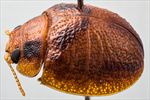
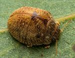
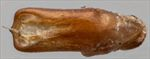
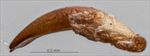
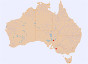

Click on images to enlarge
{kind=link}

Male, Wilpena, Flinders Ranges, South Australia
{kind=link}

Female, Tintinara, South Australia
{kind=link}

Aedeagus, dorsal view (Wilpena, South Australia)
{kind=link}

Aedeagus, lateral view (Wilpena, South Australia)
{kind=link}

Distribution
Name
Trachymela sp. Ta95
Reference specimen
2001-152b, Wilpena, South Australia.
Adult Description
Length: ♂ 4.6–4.9 mm (n=3), ♀ 4.7–5.5 mm (n=3).
Colouration:
- Head: Uniformly light brown, at most with small, vaguely darker flecks around base of eyes and antennal insertions; labrum straw-brown; mandibles dark brown- or black-tipped; antennae uniformly straw-brown.
- Pronotum: Brown, concolorous with head, with two prominent broad quadrate black maculae situated one on each side between eyes and humeral callus and extending from anterior to posterior edge; sometimes these maculae are not black but of a darker brown than rest of surface and/or reduced in size.
- Scutellum: Brown, concolorous with pronotum, usually narrowly infuscate with darker brown.
- Elytra: Brown, concolorous with pronotum, with a broad dark brown or (less commonly) black band extending from anterior elytral margin just above humeral callus to around elytral summit, another is situated just inside margin of elytral disc and extends from about its midpoint to apex; less often, the elytral suture from just past summit to apex is broadly bordered in dark brown or black; punctures are concolorous with or a slightly darker shade than interstices, humeral callus usually darker than surrounding area.
- Venter & Legs: Light- to mid-brown with metaventrite sometimes slightly darker in shade, at least laterally; inner surface of elytral epipleura brown.
- Cuticular Wax: Mostly of a uniform light brown colour, distributed relatively evenly, though elevated areas such as verrucae and ridges tend to be wax-free, with the thin, central transverse ridge appearing as a fine line across the wax layer.
Morphology:
- Head: Punctures moderately large (pd ≈ 1.5–2 × ef) and slightly unevenly and densely distributed. Antennae short, particularly in females (AL/BL: ♂ 39–43%, ♀ 31–34%), filiform.
- Pronotum: Almost evenly curved transversely, foveal depression absent with epidermis usually slightly elevated in a small pustule behind eyes, discal area with surface noticeably uneven, usually with a shallow depression in centre, this unevenness even more pronounced in the lateral marginal region; punctures relatively large, usually slightly larger than those on head, clearly to more vaguely impressed, evenly to slightly unevenly distributed and relatively dense (spacing ≈ 2–3 pd), becoming much more coarse at lateral margins. Front margins join lateral margins in a smoothly rounded right-angle, with lateral margin initially straight, often for more than half of distance to rear margin, before curving smoothly and gradually towards rear margin, broadest just in front of posterio-lateral angle.
- Scutellum: Punctured, with punctures similar in size and density to those on pronotum, less often unpunctured.
- Elytra: Surface evenly to slightly unevenly curved, punctures distinct and relatively large, closely spaced and quite evenly distributed on disc and marginal area over anterior two-thirds of surface, becoming more closely spaced and smaller in posterior third, with a few very fine punctures scattered on the interstices; a thin, rarely partially interrupted elevated ridge runs transversely from elytral summit to middle of edge of elytron with surface not noticeably depressed anterior to it, many laterally-oriented, wrinkle-like ridges are scattered both in front of and behind the central ridge, with a few small round, elevated verrucae scattered about the surface primarily posterior to the central ridge, surface continuous under humeral callus. Vertical extension of epipleura considerable (HCE/PW = 0.40–0.44).
- Venter: Prosternal process almost parallel, open or very lightly closed anteriorly, a sparse scatter of setae present along prosternal process and on mesoventrite; a single long seta present on median and posterior trochanters, 1 or 2 on anterior trochanters; front edge of metaventrite beveled, slightly rounded; inner edge of posterior of epipleurae lacking setae.
Male Genitalia (Aedeagus):
- Dimensions: Short (LPE/BL = 27–30%).
- Dorsal view: Shaft approximately parallel-sided from basal sulcus to middle, then widening very slightly and evenly towards apex with widest point (WPE = 0.3 × LPE) very close to apex, sides then turn inwards sharply so that anterior is almost perpendicular to long axis, tip triangular and small, sides of the relatively large ostium converge slightly so that it is almost quadrate, with anterior slightly wider than posterior extreme, dorso-median channel does not extend past ostium and dorsal ostial processes extend to a little behind spatula.
- Lateral view: Shaft very lightly curved throughout, with a very slight downward curve interrupting it about 15% of distance from apex and also thinning from this point to apex, tip continues on same plane, neither deflexed nor reflexed.
Immature Stages
Unknown.
Similar species
- Ta114: This species is of similarly small size as Ta95 and they can be difficult to separate. Ta114 does not have the dark brown band along the inside of the margin of the elytral disc that is present, at least as a darkening, on most specimens of Ta95. Its central transverse ridge is less clearly defined than that of Ta95 and does not extend all the way to the elytral margin. Ta114 usually has the centre of the disc of the pronotum slightly elevated rather than depressed, as is the case in Ta95. The aedeagus of the two species is of a quite different form.
- Ta10: Largely overlaps in both size and distribution with Ta95, and lightly marked specimens of Ta10 are almost impossible to differentiate from it. It usually has black markings on the head, and the black markings on the elytra are generally more extensive, though in the same position as those of Ta95. The verrucae are slightly different in nature to those of Ta95, being less expanded longitudinally and the central transverse ridge does not quite reach the elytral margin. In addition, Ta95 never has any black colour ventrally.
Notes
- Distribution & Abundance: This small species has so far been found at only two locations, both in South Australia (Flinders Ranges and South-east region).
- Host Associations: Recorded from a species of box eucalypt, almost certainly Eucalyptus intertexta (subgenus Symphyomyrtus, section Adnataria) in the Flinders Ranges, and on E. fasciculosa (subgenus Symphyomyrtus, section Adnataria) in the South-east region.
Copyright © 2026. All rights reserved.